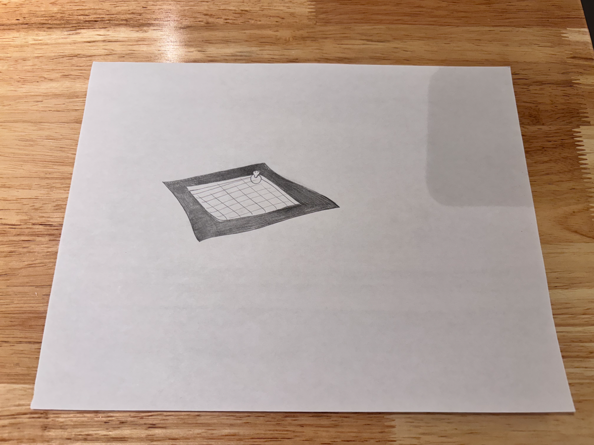
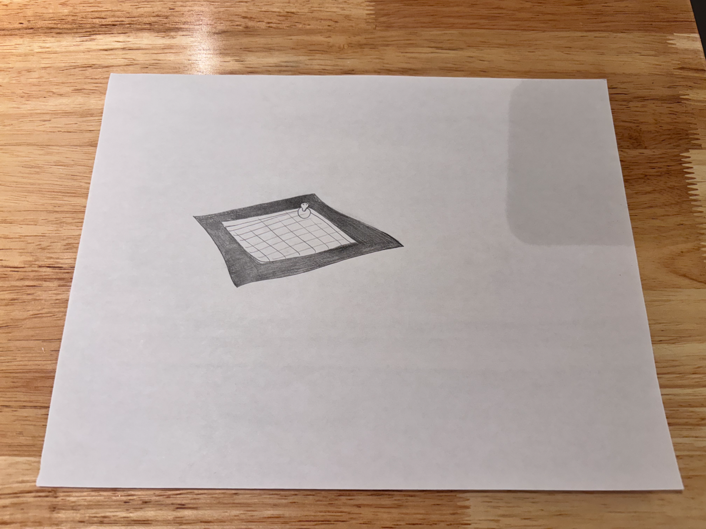
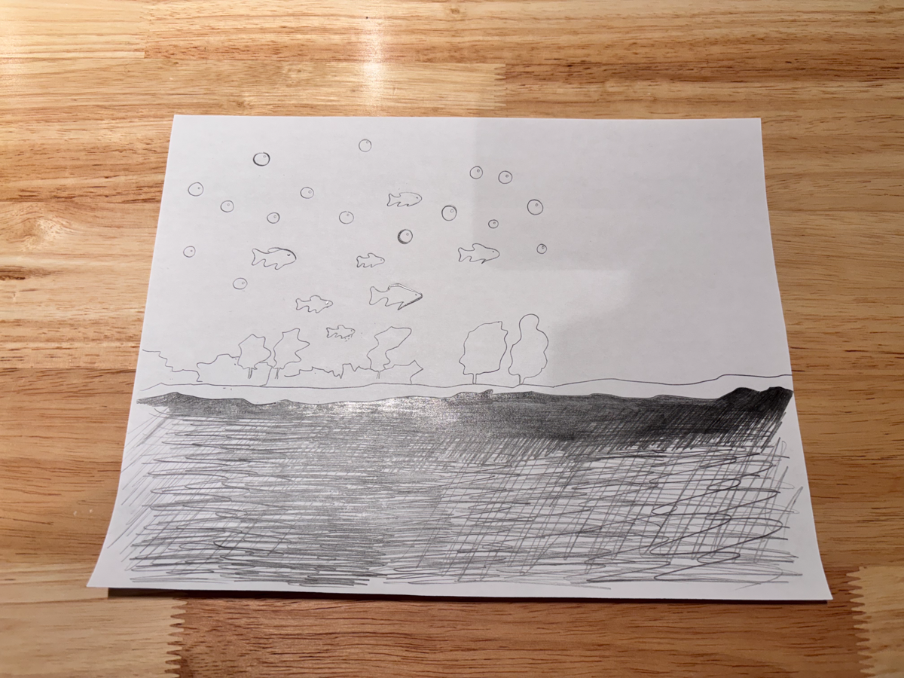
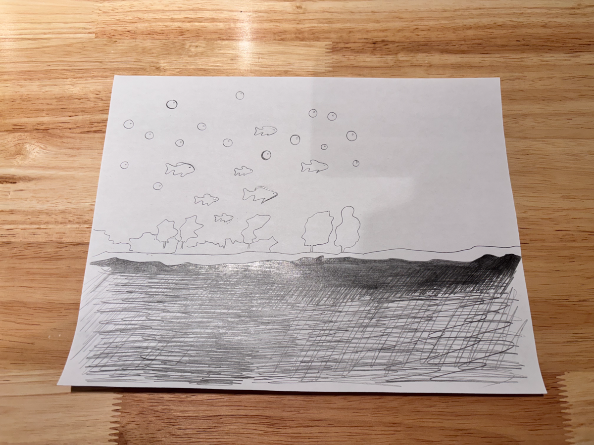

Welcome to My Website
This is a simple HTML page that includes two video links.
Click the links below to watch the videos:
My first project was designing and 3D printing an airplane model using Fusion 360. This was the first project I completed in my first week. Although the project was somewhat complex, I managed to finish it successfully. However, there were a few minor regrets: due to the large size of the model, my instructor suggested dividing it into two parts for printing to ensure better results. After printing, I encountered difficulties during assembly. I tried using one type of glue, but it didn’t work well, so I’m planning to try another type to resolve the issue.

This is my Blender cat, and I designed it with a simple, playful style. I gave it a smooth, rounded body and a big, sphere-like head with cute pointy ears. Its legs are stretched out in a relaxed sitting pose, while the tail curves gently to the side. I like using clean, basic shapes to make it feel soft and approachable. Right now, the tail is just a placeholder, but I plan to refine it later. The clay-like material adds a warm, handmade touch, making my little cat feel even more charming and fun to work on.


This is my swimming duck scene in Blender, where I’ve created a playful and vibrant environment. At the center, the rubber duck floats atop a calm water plane, adding a touch of fun and whimsy. Surrounding the water is a tiled pool border that frames the scene neatly, giving it a clean and structured look. I used simple shapes and materials to create a balanced composition, while the lighting brings focus to the duck. The grid floor and viewports showcase my process, showing how I’m building and refining this cheerful aquatic setup.
 

This is my Blender scene featuring a school of swimming fish, where I’ve brought together vibrant elements to create an underwater fantasy. The fish are beautifully detailed, with bright orange scales that make them stand out as they glide through the scene in synchronized motion. Below them, purple rocks and terrain add a surreal, colorful backdrop, while a line of autumn-colored trees gives the environment a unique mix of underwater and terrestrial vibes. The combination of vivid colors and dynamic arrangement reflects my playful approach to blending natural and fantastical elements in one cohesive scene.
 

While working with Fusion 360, I found its user interface to be friendly and its design process quite intuitive. This gave me more confidence in completing the airplane model. After finishing this project, I decided to challenge myself further by exploring animation projects in Blender. Compared to Fusion 360, Blender has a much steeper learning curve, especially when it comes to creating animations, which require significant time and effort. Over the past few weeks, I attempted four Blender projects, three of which failed. The first project failed due to a lack of technical skills. The second one was lost because I didn’t name the file properly, and it got overwritten when saved—an unfortunate mistake. The third project failed because I kept changing my ideas throughout the process, which ultimately led me off track and unable to complete it. The only successful project was an animation of a fish swimming. Although it appeared simple, the process was far from easy. Toward the end, even my computer started lagging, probably “exhausted” from the workload. Reflecting on this experience, I learned a few key lessons: 1. The importance of organizing and naming files: Properly naming and organizing files can prevent loss or overwriting, saving time and effort. 2. Commitment to completing plans: In design and production, having a clear initial idea is crucial. Once a goal is set, it’s important not to change direction too frequently, as this can lead to incomplete projects. Despite the challenges, I feel that I gained a lot from the process. Moving forward, I plan to focus more on careful planning and execution in my future projects, aiming to further improve my skills and efficiency.
thrid years video.
LIA video.
This is a simple HTML page that includes two video links.
Click the links below to watch the videos: